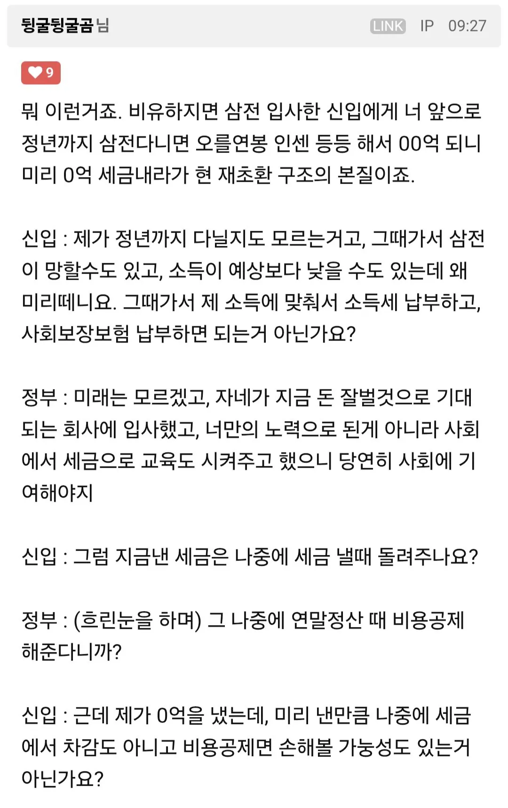
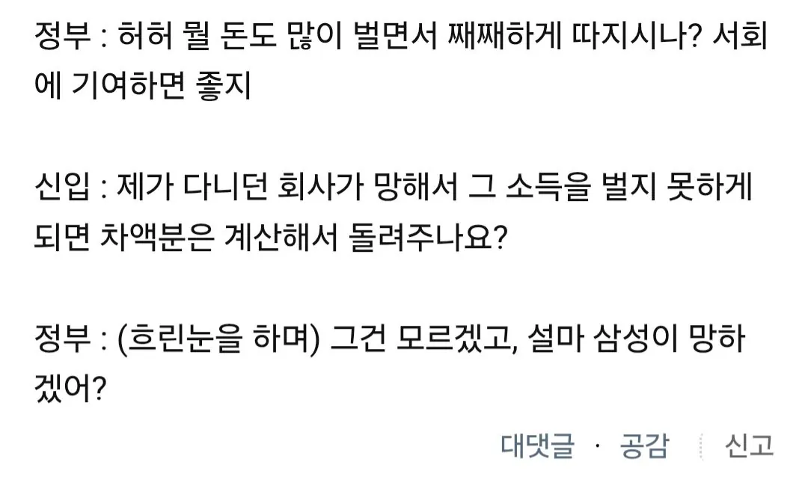
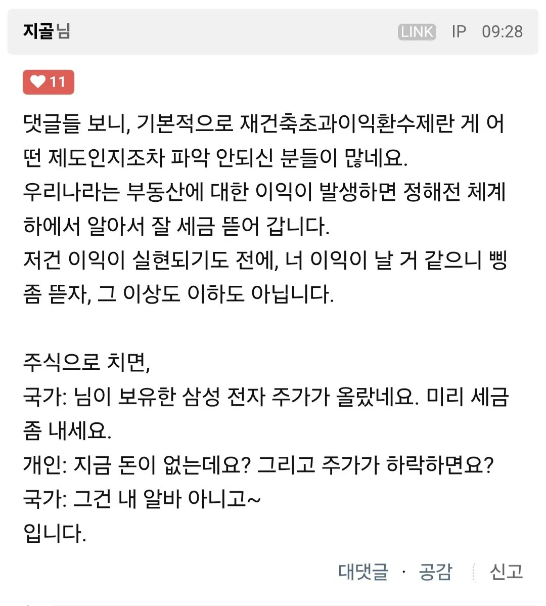

대폭락을 대비해야한다면서 왜 재초환을 함?



대폭락을 대비해야한다면서 왜 재초환을 함?
이 븅신아 그러니까 당연히 내야 되는 세금에 징징거리는 글이라고. 억지세금이라는건 너같이 선동당한 놈들 뇌피셜이고. 이게 20년이 넘은 법인데 워낙 이익이 크니까 그동안 가만있다가 이제 분담금 억대 될정도로 사업성이 악화되니까 징징거리기 시작한거야 븅신새끼야
그동안은 부과를 안했다가 이번에 부과하면서 문제가 된거지 니새끼 말이 맞으면 사실적시 명예훼손도 합헌이다 조두순 성범죄자 이런거 모르고 있는데 까발리면 사실적시로 고소 당하는데 참 합헌이고 좋은 법이겠다? 우리동네에 아동 성범죄자 써붙이면 고소당하는거 모름? 그게 넌 정상적인 법인 세상에 살고있구나? 수준 좋다 ㅎㅎㅎ 동의하는 거지? 합헌이면 말도안되는 법도 따라야 한다는거지? ㅎㅎㅎ
내가 볼땐 니가 잘못이해하고있음
쁑신 ㅋㅋㅋ
이걸 신입사원으로 해석하네 ㅋㅋㅋㅋㅋㅋ
저거알고 허가받고 재건축 다 진행한거잖아.
재건축으로 돈 벌지말라는게 기본골자인건데ㅋㅋ
모르고 입사하는것도 아닌게 베이스인데 어처구니없는 비유
입사도 아님. 신입사원하면 돈벌라고 하는건데
재건축은 집 부족해서하는거라며
집으로 돈버는건 잘못됬고 집값올리지마라며 ㅋㅋㅋㅋㅋㅋ
돈벌라고 생각했으면 짜증나는게 맞는데
그렇게는 주장을 못하니 이상한 비유를하는거지
헌재에서 합법 떳으니 괜찮다는 분들은 관습헌법 어쩌구 하면서 수도 못옮기게 했던거랑 여성 징병 안하는거 다 암말 안하고 조용히 계시겠죠?
이새끼는 무주택자 일진들한테 쳐맞고 다녔나
하루종일 상주하면서 맨날 부동산만 쳐올리네
합헌이 나온거라 의미 없음.
이상해도 인프라때문에 오른부분을 인정하고, 공공의 이익을 고려해서 그렇게 세금 거두는게 맞다고 한거니까.
병신비유는 붐업이지
재초환은 삥뜯기 맞지
엥? 아무튼 정의로우니까 괜찮은 것 아님?
재건축 로또 투기꾼들 때려잡고 정의로운 세금 걷어서 민생 살리는거 아님???
삼전닉스초과이익도 환수해야제
부동산은 유독 답정너가 많은 거 같음
화도 존나 많고
와ㅋㅋ 클리앙도 대갈통봉합됐네ㅋㅋㅋㅋㅋㅋㅋㅋ
아니 앞페이지 모지리 하나 보니까 꼭 그런 것만은 아닌 것 같아 ㅋㅋㅋㅋㅋㅋ
보유세는 월세에 전가되니까 올려봤자 소용없고 보유세 때리지 말자며
저것도 암튼 집값에 다 전가되니깐 집주인한텐 손해 없는거 아닌가?
50억 집 오우너보단 세금 10억내고 70억 집 오우너 되는게 있어보일텐데
어허 '나쁜 자본주의'
재초환 재건축초과이익환수 인가? 무슨 줄임말이지
재초환 부과할거면 조합원만 부과하지말고 청약당첨자도 같이 부과해야지 분상제로 로또청약맞는 청약당첨자는 시세차익 싹다 공짜로 먹고 썩다리 아파트에서 조합설립부터 사업진행 분양까지 리스크 테이킹한 조합원들은 몇억씩내냐? 누가 투기꾼이냐 폭락이버러지새끼들이 그렇게 욕하는 다주택자 총알장전해주는 전월세로 무주택기간늘려서 한방에 시세차익 먹는 무주택자? 아니면 썩다리부터 꾸준히 실거주하면서 사업까지 진행한 조합원?
아무튼 합헌이고 아무튼 정의로운 세금이래잖냐 ㅅㄱ
양도세로냄 노 걱정하셈
조합원은 양도세 안내는줄아나
낸만큼은 공제가 되겠죠?
조합원은 양도세도 안냄?
재초환만큼 공제가 되겠죠?
개인적으로 좀 덜만들어진 느낌을 받는 법임 ㅇㅇ 좀 감정이 많이 들어간 것 같달까??
의도야 이해는 가지만
실제로 특정 정당의 법안은 보통 감정이 앞서서 대충 만든 누더기인 경우가 90%
차에 달려든 식이 법이 좋은 사례
저러는건 어설프게 이득날까말까아리까리한건 시작도 하지말아라는경고성정책이지.재개발하면무조건돈되는줄알고사업진행하고클수록 환급급이익금이 커지니까덩치 이빠이 불려서 재개발하려는거사업시행하다 엎어지면 그거관리하는데 섹,ㅁ으로 막아야지.둔촌주공도 원레는나가리되는건데알게모르게 산소호흡기 많이달아서 겨우살려놓은건데 이런게 계속일어나면 국가도 여력이 없다 이거지..
재초환 인정하는데 그냥 양도세 낼 때 합산 내게 해주면 좋겠음. 적어도 실현할 때 내게 하자.
비유가 병신인데 이건?
글쓴놈이 뭔 의도로 이걸 가져왔는지 모르겠다. 설득력이 없어. 병신추
그지새끼들 개많네
재건축 초과이익은 노동소득이랑 비교대상도 아니고 억지로 따지자면 상여금에 가까운데 상여금은 실제로 과세율이 높음. 진짜 삼성전자 입사라는게 전혀 비교가 안되는게 재건축은 준공하면 그 시점에 건물 가격이 정해지고 손익도 정해짐. 그 때 이익분을 환수해야지 그럼 10년 20년뒤 더 오른 뒤 그만큼 더 내라고 하면 군말없이 더 낼거야?
그리고 조건에 따라서 집을 팔때까지 납부를 미룰 수 있는 제도도 있는걸로 알고있음.
비유 병신같은걸 들고와서 선동하면 어떡하노 게이야
이건 새로생긴 법이 아님. 20년도 넘은 법임. 당시에는 재개발만 하면 업자들과 아파트주인들이 떼돈벌던 때에 만들어진거임.
3억하던 아파트가 5억짜리 아파트로 바뀌었는데도 세금을 안걷다가 세금을 걷으려고 만든게 재개발초과이익환수제임
그냥 앉아만 있었는데 오른게 아니라 이익을 위해 재개발이라는 사업을 벌이고 이익이 생겨서 세금을 매기겠다는건데 여기에 어디에 부당함이 있고 강탈이 있음? 그래도 세금내기 싫어 사람들이 들고 온 게 미실현 이익이란 표현임
그럴듯하게 들리지만 그냥 반대를 위해 만든 프로파간다임. 쟁점은 이거임. 법은 준공시점에 새 아파트가 구축 아파트보다 더 비싸다? 그러면 이미 이익이 실현된 것으로보고 이익에는? 세금을 걷는다라는 취지이고 세금내기 싫어 사람들 주장은 아니다 내가 팔아야 이익이다. 아직 미실현된 이익에 세금을 걷는다고? 도둑질이다 이런 주장인건데, 가만히 앉아 있었는데 집값이 오른거에 세금을 걷진 않지. 재개발 결정시점에 보상을 받고 나가지 않고 조합에 남아서 참여한다는것 자체가 이익추구 행위로 간주되고 준공시점 신축 아파트값이 구축보다 올랐다면 이익이 실현됐다고 보는게 법원의 판단임. 팔아야 이익이다! 미실현 이익에 매기는 세금이다라는 주장은 당연히 까였고 행정소송 헌법재판까지 다 끝난 사안임.
여기 댓글에 나중에 아파트값이 구축 값보다 더 떨어지면 환불해주냐는 멍청이까지 나오던데 설명 아무리 해줘봤자 안읽고 이해하려하지 않거나 이해못하거나 하는 애들은 답이 없음
그리고 구간별로 공제도 해주고 요즘같이 사업성이 떨어져서 분담금을 내야하는경우면 분담금도 공제하고 세금매김
내가볼땐 단 하나도 논란거리가 없는 주제이지만 그래도 세금 내기 싫어 사람들은 항상 존재하니 이런 옛날 얘기도
계속 파묘되서 올라오고 하는거라고 이해는 함
그리고 처음에 말했듯이 20년 된 제도임. 글 작성자는 굳이 "대폭락을 대비해야한다면서 왜 재초환을 함?"이라는 사족을 달면서 스스로 멍청함을 증명함. 모르면 그냥 퍼오기만 했어야지 사족은 왜 붙여
저 글 쓴놈도 좆도 모르면서 쓴 똥글이고 퍼온놈은 저 똥같은 글에 설사같은 사족까지 달았네
이딴놈들이 선동글쓰고 렉카질까지 하니 부동산이 오르지
헌법에 대하여 교양으로라도 공부를 하였으면 이런 주장이 없었을텐데...
우리나라는 자본주의 시장경제를 인정하되 국가가 개입하여 사회적 불평등을 완화하고 복지를 증진하는 수정자본주의국가임.
이과정에서 개인의 침익이 있을수 있고 개인의 침익과 공공의 이익을 비교하여 공공의이익이 더 크다 라고 헌재는 판단한것임
기본권의 침해가 아니다 가 아니고 침해는 맞지만 나라의 국가운영 방향이 손해 보는 일부가 참아라 이거다.
이건 나중에 사회적 인식이 변하면 물론 변할수도 있지만서도 지금 행정부와 입법부의 입장에서는 올바른 정책적 기조라는거지 결국 국민인 우리가 뽑았고 우리가 선택한 결과라는것임
여기서 나는 1찍 안했는데요 이런 무식한말 하는놈은 없길바란다...
여러분은 지금 집 가격이 10억 20억씩 올라서 세금내야 할 부자들을 걱정하는 자산 5억도 없는 사람들의 댓글들을 보고 있습니다.
저지능한 렉카질은 붐업이야
국가가 직접 하는 적법하고 정의로운 수탈
아이고 이 병신아 지금 세금이라는 제도 자체에 대해 토론하는게 아니잖아. 이미 부동산 관련 세금은 수두룩한데 거기에 초과이익이니 뭐니 하면서 억지로 수억의 세금을 추가로 매기니까 논란이 발생하는거지. 제발 ㅈ도 모르면 끼어들지 좀 마